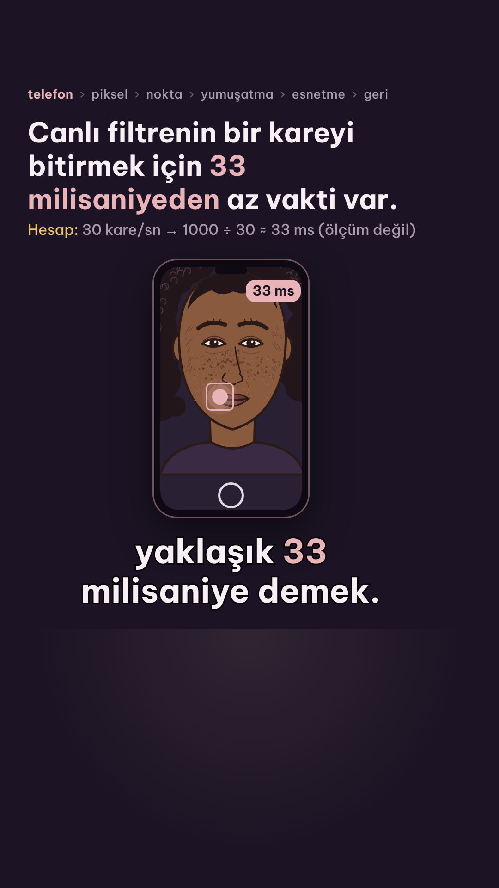
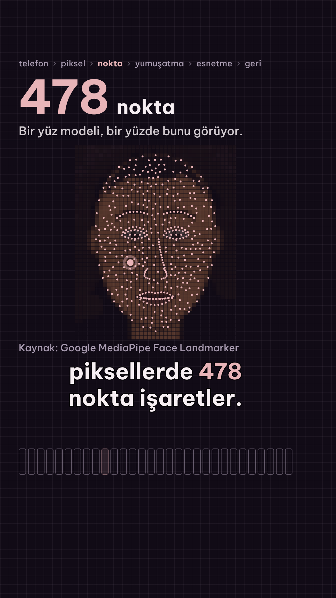
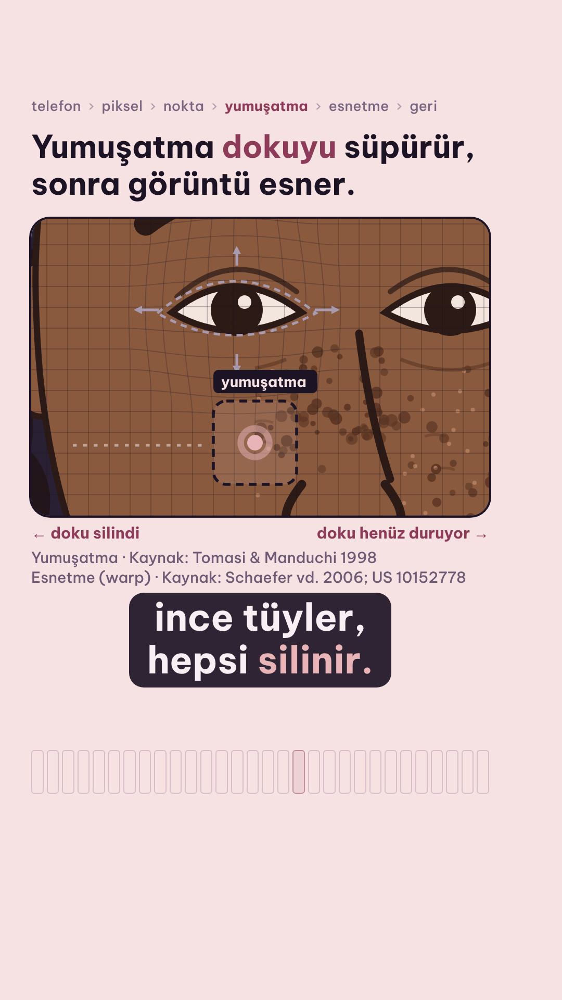
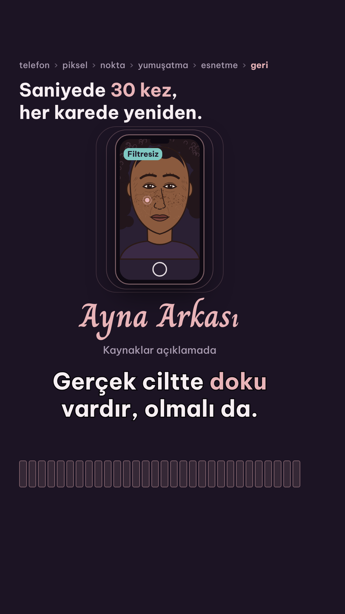

10:00–0:06 · kanca
Telefon, selfie ve "33 ms"
Telefon ekranında çizgi-portre. Köşede "33 ms" rozeti belirir, yanaktaki toz pembe nokta zoom'un hedefini gösterir. Hesap satırı: bu bir ölçüm değil, aritmetik.
SESLENDİRME"Saniyede 30 kare demek, her kare için yaklaşık 33 milisaniye demek. Filtre bütün işini bu sürenin içine sığdırmak zorunda."
Ses: yok (ilk karede hareket: rozet + nokta nabzı)

20:08–0:15 · zoom 1–2
Piksel dünyası → 478 nokta
Kamera noktaya dalar. Selfie piksellere ayrılır, üstüne 478 toz pembe nokta yayılır, sayaç 0'dan 478'e koşar. Zemin bir ton koyulaşır.
SESLENDİRME"Yakından bakalım: selfie aslında piksellerden oluşur. Bir yüz modeli bu piksellerde 478 nokta işaretler."
Ses: whoosh-cinematic (piksele dalış) · kaynak: Google MediaPipe

30:16–0:25 · anahtar an
Yumuşatma geçer, ızgara esner
Zemin açık toz pembeye döner. Yumuşatma penceresi yanaktan geçer, arkasında doku kalmaz. Ardından ızgara göz çevresinde esner (nötr oklar, ödül efekti yok).
SESLENDİRME"Küçük bir yumuşatma penceresi cildin üstünden geçer. Gözenekler, çiller, ince tüyler, hepsi silinir. Sonra noktalar kaydırılır, görüntü esner: gözler büyür, çene daralır."
Ses: whoosh-cinematic (açık zemine geçiş) · kaynak: Tomasi & Manduchi 1998; Schaefer vd. 2006; US 10152778

40:26–0:34 · geri çekilme
Telefona dönüş, kanalın cümlesi
Kamera telefona geri çekilir. Yüz filtresiz ve dokusuyla ("Filtresiz", nane). Alttaki 30 kare dolar. "Ayna Arkası" yazısı (logo yok, taslak).
SESLENDİRME"Ve bunu saniyede 30 kez, her karede yeniden yapar. Filtredeki yüz, hesaplanmış bir yüz. Gerçek ciltte doku vardır, olmalı da."
Ses: whoosh (geri) + chime · "Kaynaklar açıklamada"